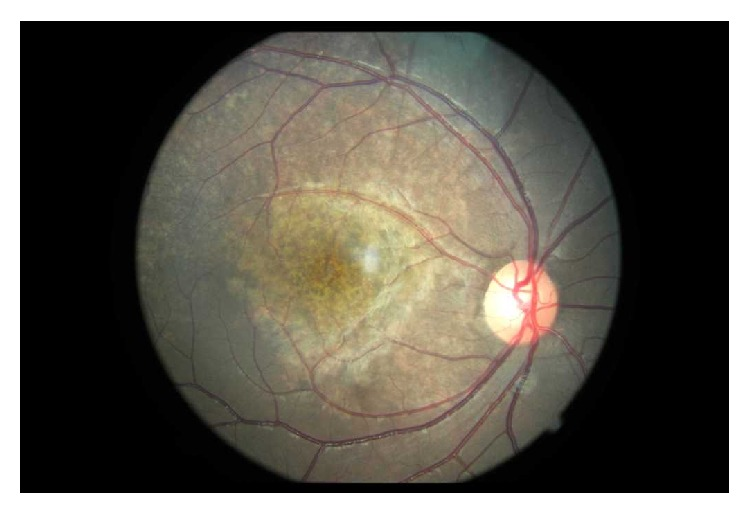
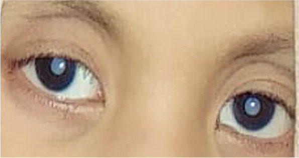
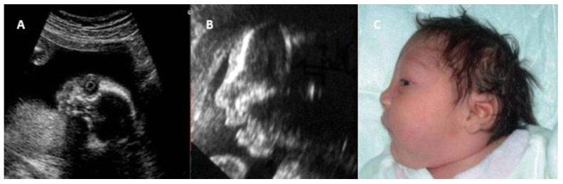
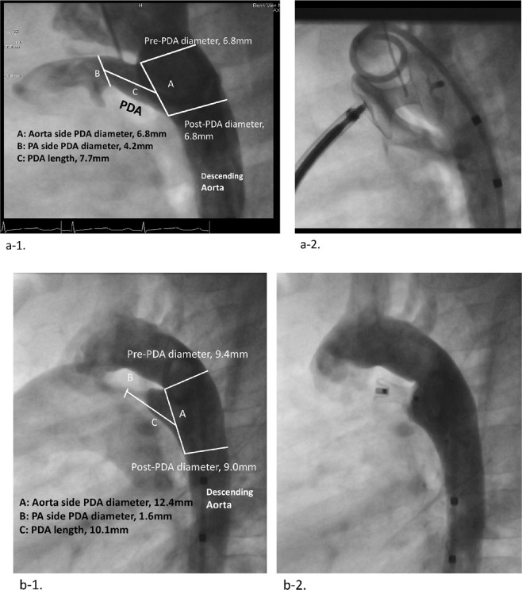

6128 — Rubella bẩm sinh (congenital rubella syndrome, CRS): tam chứng Gregg — đục thủy tinh thể + điếc tiếp nhận + hẹp động mạch phổi
Tags: pattern:duc-thuy-tinh-the pattern:viem-vong-mac-sac-to pattern:hep-dong-mach-phoi pattern:ong-dong-mach-ton-tai pattern:dau-nho pattern:gan-lach-to vung:mat vung:tim vung:nao-thai protocol:sieu-am-thai protocol:MRI-thai protocol:PCR protocol:ABR incidentaloma:khong
Mức chắc chắn (certainty): tổng hợp y văn (literature synthesis) — mô hình hóa toàn cầu (PMC10689248), giám sát Anh 2003–2016 (PMC5954604), loạt 115 ca Bangladesh có siêu âm tim (PMC7692988), loạt 108 trẻ Việt Nam (PMC6863812), sàng lọc 320 học sinh Cameroon có ảnh đáy mắt (PMC4262751), tổng quan cơ chế – chẩn đoán (PMC12156454), 1 ca nguyên văn Indonesia có ảnh đục thủy tinh thể (PMC9745697), 1 ca nhập khẩu Hoa Kỳ (PMC5875265) và 2 ca Canada (PMC11323722). Số liệu đối chiếu PMCID trong sources.md; chỗ suy luận được ghi rõ.
Câu chốt: CRS là bệnh của THỜI ĐIỂM nhiễm, không phải của nồng độ virus. Ba con số quyết định cách đọc: (1) lây dọc tới 90% nếu nhiễm trong 12 tuần đầu, > 80% trong 3 tháng đầu, rồi giảm giữa thai kỳ và tăng lại gần 100% cuối thai kỳ nhưng gần như không gây dị tật (PMC12156454; PMC5954604: 9/12 ca CRS nhiễm trước 16 tuần, 8 trẻ khoẻ sau phơi nhiễm > 16 tuần); (2) tổn thương không đối xứng về tần suất: tim 98,2% nhưng điếc 75,6%, đục thủy tinh thể 53,0%, đầu nhỏ 68,6% (PMC7692988) — nên tim bình thường không loại trừ; (3) "muối tiêu" võng mạc là dấu rẻ nhất và bền nhất nhưng mẹ nhiễm không triệu chứng 25–50% nên không có tiền sử vẫn phải nghĩ tới (PMC12156454; 65,2% ca Bangladesh không nhớ nhiễm, PMC7692988).
1. Tổng quan bệnh học – cơ chế hình ảnh (TẠI SAO)
1.1 Virus và đường lây
- Rubella virus (họ Togaviridae, chi Rubivirus, RNA sợi đơn) — chỉ người là ổ chứa; lây qua giọt bắn hô hấp, thời kỳ lây mạnh nhất 7 ngày trước đến 7 ngày sau phát ban, ủ bệnh 14–21 ngày (PMC12156454).
- Nhiễm ở mẹ 25–50% không triệu chứng → nhiễm huyết → nhiễm nhau thai → thai. Virus gây chết tế bào theo chương trình ở tế bào đang phân chia chậm + ức chế phân bào → cơ quan thiếu tế bào (giảm sản) chứ không phải "viêm–hoại tử ồ ạt" như toxo. Đây là lý do tổn thương CRS nhỏ, đối xứng kiểu giảm sản: mắt nhỏ, ống ốc giảm sản, nhánh động mạch phổi hẹp.
- Vì sao có cả tổn thương MẠCH: virus xâm nhập nội mạc mạch máu nhỏ → viêm nội mạc, phù nề, hẹp lòng → thiếu máu cục bộ ở võng mạc, ống ốc, cơ tim và thành ống động mạch. Trên hình ảnh, hệ quả là hẹp nhánh ĐMP ngoại vi nhiều chỗ và PDA kiểu ống (tubular) — không phải một chỗ hẹp khu trú.
1.2 TẠI SAO mỗi cơ quan lại có hình ảnh đó
- Thủy tinh thể: nang thủy tinh thể hình thành tuần 4–7; nhiễm đúng cửa sổ này → hoại tử sợi thủy tinh thể → đục hai bên, thường đục nhân/trung tâm, kèm nhãn cầu nhỏ (microphthalmia) vì mắt ngừng lớn theo. Trên siêu âm thai, thủy tinh thể bình thường là vòng echo dày bao quanh lòng trống âm; khi đục, lòng thủy tinh thể trở nên echo dày/đặc (Hình 3 trong bài). Đục thủy tinh thể một bên ít gợi ý CRS hơn nhiều.
- Võng mạc "muối tiêu" (salt-and-pepper): virus phá biểu mô sắc tố võng mạc (RPE) từng đám → mảng giảm sắc tố xen mảng tăng sắc tố ở cực sau, bờ không rõ. Vì tổn thương ở lớp RPE chứ không ở tế bào cảm quang, thị lực thường KHÔNG giảm — đây là điểm khác cốt lõi so với viêm võng mạc do toxo (sẹo hoại tử, mù). Trong loạt 320 học sinh Cameroon: 29 ca có bệnh võng mạc sắc tố, 96,6% nằm trong nhóm khiếm thính, 89,7% hai bên (PMC4262751).
- Tim: vách buồng tim hoàn tất tuần 4–8; ống động mạch (ductus arteriosus) bị viêm → không co lại sau sinh. Trên siêu âm tim/CTM, PDA của CRS ngắn, thành dày, kiểu ống và thường kèm hẹp nhánh ĐMP — trong loạt so sánh: PDA kiểu tubular 16% ở CRS vs 3% ở không CRS (p = 0,020), CRS có cân nặng sinh thấp hơn, hẹp phổi/hẹp van động mạch chủ nhiều hơn, áp lực ĐMP và áp lực ĐMC tâm thu/tâm trương cao hơn (p < 0,001) (PMC6863812).
- Tai: tổn thương mạch vân (stria vascularis) và cơ quan Corti do thiếu máu → điếc tiếp nhận, có thể một bên hoặc hai bên và tiến triển thêm vài năm đầu — lý do phải đo thính lực lặp lại, không chỉ đo một lần lúc sinh.
- Não: viêm màng não – mạch máu nhỏ gây đầu nhỏ, chậm phát triển, có thể vôi hóa rải rác; nhưng vôi hóa KHÔNG phải dấu chủ của CRS (xem mục 5) — khác hẳn CMV (quanh não thất) và toxo (rải rác cả hạch nền) ở bài 6102/6103.
- Da – máu: tạo máu ngoài tủy ở trung bì + giảm tiểu cầu → phát ban "bánh muffin việt quất" (blueberry muffin), gan lách to, vàng da, bệnh xương giảm đậm độ (radiolucent bone disease).
1.3 Ngưỡng định lượng cần nhớ
| Chỉ số | Số liệu | Nguồn |
|---|---|---|
| Lây dọc theo tuổi thai | tới 90% trong 12 tuần đầu; > 80% trong 3 tháng đầu; giảm giữa thai kỳ; gần 100% cuối thai kỳ (nhưng ít dị tật) | PMC12156454 |
| Cửa sổ gây CRS | 9/12 ca CRS nhiễm trước 16 tuần; 8/8 trẻ khoẻ khi phơi nhiễm > 16 tuần | PMC5954604 |
| Gánh nặng toàn cầu | 32.000 ca CRS sinh năm 2019 (KTC 13.000–60.000) vs 100.000 năm 2010; −73% từ 1996; châu Phi 64/100.000 trẻ sinh sống, Đông Địa Trung Hải 27/100.000 | PMC10689248 |
| Tần suất ở nơi có giám sát tốt | Anh 2003–2016: 31 nhiễm rubella trong thai kỳ = 0,23/100.000 thai kỳ → 5 CRS | PMC5954604 |
| Tam chứng Gregg (115 ca) | tim 98,2% (PDA 76,5%, hẹp van ĐM 38,2%, hẹp nhánh ĐMP 14,7%, VSD 2,6%, ASD 8,6%, hẹp eo 5,2%) · điếc 75,6% · đầu nhỏ 68,6% · đục thủy tinh thể 53,0% | PMC7692988 |
| Tuổi chẩn đoán | trung vị 2 tuổi (3 tháng–14 tuổi) — nghĩa là bỏ sót ở giai đoạn sơ sinh là quy luật, không phải ngoại lệ | PMC7692988 |
| Huyết thanh | IgG dương 91,3%, IgM dương 8,6% ở trẻ đã có chẩn đoán | PMC7692988 |
| "Rubella facies" | mặt tam giác 82,6% · trán rộng 76,5% · xoáy tóc bên phải 80% · mũi cao 65,2% | PMC7692988 |
| Bệnh võng mạc | 29 ca, 96,6% trong nhóm khiếm thính, 89,7% hai bên (y văn: hai bên 80%) | PMC4262751 |
| Ca nghi CRS được xác nhận | Ấn Độ, 8.953 ca nghi: 6,5% xác nhận bằng xét nghiệm; tỉ lệ xác nhận 24,9% (2017) → 2,5% (2025) | PMC13546868 |
2. Mẫu hình + chẩn đoán phân biệt theo vị trí (gamut)
- Mẫu hình A — đục thủy tinh thể HAI BÊN + nhãn cầu nhỏ, trẻ nhỏ: CRS (kèm "muối tiêu" võng mạc, tim bẩm sinh, điếc); phân biệt galactosemia (đục dạng "giọt dầu", bắt đầu quanh rìa, kèm vàng da – gan to – rối loạn đông máu), hội chứng Lowe (đục + giảm trương lực + toan ống thận + chậm phát triển), PHPV/PFV (dây xơ từ thể thủy tinh tới đĩa thị, một bên), đục thủy tinh thể di truyền (không có bất thường toàn thân).
- Mẫu hình B — viêm võng mạc sắc tố "muối tiêu" ở cực sau: CRS; phân biệt giang mai bẩm sinh (cũng "muối tiêu" + Hutchinson răng + viêm xương sụn), loạn dưỡng sắc tố võng mạc sớm (RP), sẹo viêm hắc–võng mạc do toxo (sẹo teo có viền sắc tố, giảm thị lực), ngộ độc/thiếu vitamin A.
- Mẫu hình C — PDA + hẹp NHÁNH động mạch phổi ở trẻ nhỏ: CRS; phân biệt hội chứng Williams (hẹp trên van ĐMC + hẹp nhánh ĐMP + mặt "elfin" + tăng canxi máu), Alagille (hẹp nhánh ĐMP + cột sống "bướm" + thiểu sản đường mật), hẹp nhánh ĐMP đơn thuần, Rubinstein–Taybi.
- Mẫu hình D — gan lách to + giảm tiểu cầu + phát ban "bánh muffin việt quất": CRS; phân biệt CMV, toxo, giang mai bẩm sinh, u nguyên bào thần kinh (khối thượng thận), bạch cầu cấp (công thức máu ngoại vi).
- Mẫu hình E — đầu nhỏ + vôi hóa nội sọ: CRS (vôi hóa thưa, không đặc hiệu); CMV (vôi hóa quanh não thất, nang dưới nội tủy), toxo (vôi hóa rải rác cả hạch nền), Zika (vôi hóa ranh giới vỏ–chất trắng, vỏ mỏng), Aicardi–Goutières (vôi hóa hạch nền + lympho bào dịch não tủy).
- Gợi nhớ: Rubella = Retina muối tiêu + Riêng biệt "hẹp nhánh ĐMP" + Răng? không; chốt bằng Rubella IgM/PCR. Đừng nhớ theo tam chứng đầy đủ — chỉ 3/115 ca có đủ cả ba dấu trong thực hành (suy ra từ tần suất từng dấu ở PMC7692988).
3. Bảng so sánh phân biệt (ma trận đối chiếu)
| Thực thể (entity) | Hình ảnh điển hình (US/MRI/CT) | Chốt vào (rule-in) | Chốt loại (rule-out) | Gợi ý xác nhận |
|---|---|---|---|---|
| Rubella bẩm sinh | Đục thủy tinh thể hai bên + nhãn cầu nhỏ; "muối tiêu" võng mạc; PDA kiểu ống + hẹp nhánh ĐMP; đầu nhỏ; gan lách to; xương giảm đậm độ | Đục thủy tinh thể + điếc tiếp nhận + hẹp nhánh ĐMP/PDA ở trẻ nhỏ, mẹ nhiễm < 16 tuần hoặc không có tiền sử | Tim bình thường, không đục thủy tinh thể không loại trừ (tim 98,2% nhưng đục thủy tinh thể chỉ 53,0%) | Rubella IgM huyết thanh sơ sinh, RT-PCR dịch hầu họng/nước tiểu/dịch não tủy, IgG lặp tới 12 tháng |
| CMV bẩm sinh | Vôi hóa quanh não thất, nang dưới nội tủy, polymicrogyria thùy thái dương; bệnh võng mạc KHÔNG "muối tiêu" | Vôi hóa quanh não thất + giảm thính lực một bên + PCR CMV dương | Đục thủy tinh thể + hẹp nhánh ĐMP → không phải CMV | PCR CMV nước tiểu/dịch hầu họng trong 3 tuần đầu |
| Toxoplasma bẩm sinh | Vôi hóa rải rác vỏ + hạch nền, dãn não thất tắc nghẽn, sẹo hắc–võng mạc hoại tử hai bên | Vôi hóa rải rác + dãn não thất + sẹo võng mạc giảm thị lực | "Muối tiêu" không mất thị lực + hẹp nhánh ĐMP → nghiêng CRS | IgM/IgA sơ sinh, avidity mẹ, PCR dịch ối |
| Giang mai bẩm sinh | "Muối tiêu" võng mạc rất giống CRS; viêm xương sụn đầu xương, periostitis, gan lách to | Muối tiêu + viêm xương sụn + VDRL/TPHA mẹ dương | Không có tổn thương xương, không có hẹp nhánh ĐMP | VDRL/RPR + TPHA mẹ và con; X-quang chi dài |
| Hội chứng Williams | Hẹp trên van ĐMC + hẹp nhánh ĐMP; không đục thủy tinh thể | Hẹp trên van ĐMC + mặt đặc trưng + tăng canxi máu | Không có đục thủy tinh thể/điếc → ít nghĩ rubella | MLPA vùng 7q11.23; canxi máu |
| Galactosemia | Đục thủy tinh thể dạng "giọt dầu", bắt đầu quanh rìa; không hẹp nhánh ĐMP | Đục thủy tinh thể + vàng da kéo dài, gan to, rối loạn đông máu, nhiễm khuẩn huyết | "Muối tiêu" võng mạc + điếc + tim bẩm sinh → không phải galactosemia | Galactose-1-phosphate uridyltransferase (GALT), galactose máu |
| PHPV / PFV | Dây xơ từ thể thủy tinh tới đĩa thị, thường một bên, nhãn cầu nhỏ | Một bên, dây xơ nhìn thấy trên siêu âm/MRI | Hai bên + "muối tiêu" + tim bẩm sinh → CRS | Siêu âm/MRI hốc mắt; không có huyết thanh rubella |

Đáy mắt: loang lổ sắc tố kiểu "muối tiêu" quanh hoàng điểm và cực sau, mạch máu và gai thị bình thường — tổn thương lớp biểu mô sắc tố, không phải sẹo hoại tử, nên thị lực thường không giảm. Đây là dấu rẻ nhất, bền nhất để truy ngược chẩn đoán ở trẻ khiếm thính. Nguồn: Int J Telemed Appl 2014 (PMC4262751), Fig. 1, CC BY.4. Protocol chụp + hệ phân tầng chẩn đoán
4.1 Trước sinh
- Xét nghiệm mẹ là bước đầu, không phải siêu âm: IgM/IgG rubella + IgG avidity khi nghi; avidity cao giúp loại nhiễm gần đây. Chẩn đoán huyết thanh chuyển đổi mới đủ cơ sở tư vấn.
- Siêu âm thai: lặp 2–4 tuần nếu mẹ nhiễm/nghi nhiễm — tìm đầu nhỏ, đục thủy tinh thể (lòng thủy tinh thể echo dày), nhãn cầu nhỏ, tim bẩm sinh/PDA, gan lách to, cổ trướng, FGR. Hình 3 dưới là ca phát hiện đục thủy tinh thể trên siêu âm thai kèm đầu nhỏ — chứng minh CRS có thể chẩn đoán trước sinh.
- MRI thai: bổ sung khi siêu âm nghi ngờ hoặc cần đánh giá vỏ não/hố sau; không thay siêu âm tim thai.
- RT-PCR dịch ối có thể dương nhưng không dự báo được mức độ nặng — vì vậy quyết định dựa trên hình ảnh + huyết thanh, không dựa một xét nghiệm.
- Giới hạn cần nói với gia đình: sau 16 tuần, dị tật cấu trúc gần như không xảy ra (PMC5954604) — nhưng điếc tiến triển vẫn có thể xuất hiện muộn, nên không hứa "an toàn tuyệt đối".
4.2 Sau sinh — bộ xét nghiệm và bộ hình ảnh tối thiểu
| Nhóm | Việc phải làm | Thời điểm |
|---|---|---|
| Xác nhận nhiễm | Rubella IgM huyết thanh; RT-PCR dịch hầu họng, nước tiểu, dịch não tủy, dịch kết mạc | càng sớm càng tốt, lặp nếu âm mà lâm sàng mạnh |
| Theo dõi huyết thanh | IgG lặp tới 12 tháng — IgG tồn tại/dương kéo dài mới chứng minh nhiễm thai (IgG mẹ mất dần) | 3, 6, 9, 12 tháng |
| Mắt | Soi đáy mắt + khám thủy tinh thể/glaucoma mọi trẻ nghi CRS | sơ sinh, rồi 6–12 tháng/lần tới khi lớn |
| Tai | ABR/ASSR (không dùng otoacoustic emission đơn thuần để loại trừ) | trước 3 tháng, lặp mỗi 6–12 tháng tới 5 tuổi |
| Tim | Siêu âm tim tìm PDA, hẹp nhánh ĐMP, hẹp van ĐM phổi/ĐMC; CTA/CTM khi cần đo nhánh ĐMP | ngay khi chẩn đoán |
| Não | Siêu âm qua thóp/CT/MRI khi có đầu nhỏ, co giật, chậm phát triển | sơ sinh |
| Toàn thân | Công thức máu (giảm tiểu cầu), men gan, X-quang chi dài nếu nghi bệnh xương | sơ sinh |
4.3 Tiêu chuẩn ca bệnh (dùng để không bỏ sót)
- Nhóm A (dấu chính): đục thủy tinh thể hoặc glaucoma bẩm sinh · bệnh tim bẩm sinh · điếc tiếp nhận · bệnh võng mạc sắc tố.
- Nhóm B (dấu phụ): ban xuất huyết · gan lách to · vàng da · đầu nhỏ · nhãn cầu nhỏ · chậm phát triển · viêm màng não · bệnh xương giảm đậm độ · các bệnh muộn (đái tháo đường, viêm não xơ hoá tiến triển bán cấp).
- Ca tương thích lâm sàng (clinically compatible) = ≥ 2 dấu nhóm A hoặc 1 dấu A + ≥ 1 dấu B; ca khẳng định = tương thích + IgM dương/RT-PCR dương/IgG tồn tại.
flowchart TD
A[Trẻ đục thủy tinh thể / điếc / PDA + đầu nhỏ] --> B{Có tiền sử mẹ phát ban khi mang thai?}
B -->|Có| C[Xét nghiệm mẹ: IgM, IgG avidity]
B -->|Không| D[Vẫn phải xét nghiệm - 25-50% mẹ không triệu chứng]
C --> E[Trẻ: IgM + RT-PCR hầu họng, nước tiểu, DNT]
D --> E
E --> F{Kết quả}
F -->|Dương| G[CRS khẳng định: ABR, soi đáy mắt, siêu âm tim, não]
F -->|Âm nhưng lâm sàng mạnh| H[Lặp xét nghiệm + IgG lặp tới 12 tháng]
G --> I[Theo dõi: thính lực 6-12 tháng, mắt, tim, phát triển]
H --> I
I --> J[Phát hiện muộn: glaucoma, điếc tiến triển, viêm não xơ hóa tiến triển bán cấp]
5. Biến thể bình thường và cạm bẫy
- Cạm bẫy 1 — "không có tiền sử mẹ nhiễm thì không phải rubella": 65,2% ca trong loạt 115 ca không nhớ nhiễm khi mang thai (PMC7692988), vì 25–50% nhiễm rubella không triệu chứng (PMC12156454). Không có tiền sử không loại trừ.
- Cạm bẫy 2 — chờ đủ tam chứng: chỉ 53,0% có đục thủy tinh thể, 75,6% điếc, 98,2% có bệnh tim. Chờ "đủ ba" = chẩn đoán trung vị 2 tuổi — đúng bằng tuổi đã qua cửa sổ can thiệp thủy tinh thể và ngôn ngữ.
- Cạm bẫy 3 — đọc "muối tiêu" thành bệnh võng mạc khác: "muối tiêu" không đặc hiệu — giang mai bẩm sinh, RP sớm, ngộ độc đều có. Chốt loại bằng huyết thanh, không bằng hình ảnh.
- Cạm bẫy 4 — tìm vôi hóa não để chẩn đoán CRS: vôi hóa ở CRS thưa và không đặc hiệu; bỏ công tìm vôi hóa trong khi không soi đáy mắt và không đo thính lực là sai thứ tự ưu tiên (ngược với CMV/toxo ở bài 6102/6103).
- Cạm bẫy 5 — IgM âm giả: IgM có thể âm ở trẻ lớn hoặc do phản ứng chéo/yếu tố dạng thấp gây dương giả. IgM âm không loại trừ; phải làm RT-PCR và theo dõi IgG tới 12 tháng.
- Cạm bẫy 6 — loại trừ vì siêu âm tim bình thường: PDA có thể đóng dần và hẹp nhánh ĐMP khó thấy ở trẻ sơ sinh do áp lực phổi còn cao. Không thấy tổn thương trên siêu âm sớm không loại trừ; lặp siêu âm sau 4–8 tuần.
- Biến thể bình thường / dương tính giả hay gặp: (a) võng mạc dạng vân (tessellation) ở trẻ da sẫm màu — đối xứng, đều, không có mảng giảm sắc tố; (b) echo dày quanh não thất ở trẻ sinh non — mất dần theo tuổi; (c) PDA "im lặng" ở sơ sinh đủ tháng trong 24–48 giờ đầu (bình thường sinh lý, không phải CRS).
- Điểm an toàn thực hành: vaccine rubella (MMR) KHÔNG gây CRS — nhiễm virus vaccine không gây dị tật; phát hiện kháng thể sau tiêm hoặc tiêm nhầm trong thai kỳ không phải chỉ định chấm dứt thai kỳ. Đây là câu hỏi hay gặp nhất ở phòng khám sản.
6. Tự lượng giá — Blind Quiz
Ca 1 — Học sinh 9 tuổi ở vùng chưa có vaccine rubella, đi khám vì nghe kém, không phàn nàn thị lực.
- Gợi ý: không có tiền sử bệnh mắt; mẹ không nhớ phát ban khi mang thai.
- Câu hỏi: Mô tả dấu hiệu ở cực sau? Vì sao thị lực vẫn tốt? Nêu 3 chẩn đoán phân biệt và xét nghiệm chốt.
Bấm để hiện đáp án (findings + chẩn đoán)
- Dấu hiệu: loang lổ sắc tố "muối tiêu" ở cực sau/hoàng điểm; gai thị và mạch máu bình thường; không có sẹo hoại tử.
- Chẩn đoán: bệnh võng mạc sắc tố do rubella bẩm sinh. Thị lực tốt vì tổn thương ở lớp biểu mô sắc tố, không phá tế bào cảm quang — khác sẹo do toxo.
- Số liệu: trong 320 học sinh Cameroon, 29 ca có bệnh võng mạc sắc tố, 96,6% thuộc nhóm khiếm thính, 89,7% hai bên; IgG rubella dương 48,7% ở nhóm khiếm thính vs 7,4% ở nhóm nghe bình thường (p < 0,0001).
- Phân biệt: giang mai bẩm sinh (VDRL/TPHA), RP sớm (ERG, tiền sử gia đình), sẹo toxo (giảm thị lực, sẹo teo rõ).
- Nguồn ảnh: Int J Telemed Appl 2014 (PMC4262751), Fig. 1, CC BY.
Ca 2 — Bé gái 4 tuổi 3 tháng, mẹ đưa đi khám vì "mắt trắng ở cả hai bên từ nhỏ".

- Gợi ý: trẻ chậm nói, nghe kém; mẹ không nhớ bệnh khi mang thai.
- Câu hỏi: Dấu hiệu chính? Vì sao đục thủy tinh thể hai bên ở trẻ nhỏ là chìa khóa? Cần khám gì tiếp?
Bấm để hiện đáp án (findings + chẩn đoán)
- Dấu hiệu: đục thủy tinh thể hai bên, đồng tử trắng (leukocoria), nhãn cầu nhỏ.
- Chẩn đoán: rubella bẩm sinh — xác nhận bằng RT-PCR/máu; ca gốc là ca CRS 4 tuổi 3 tháng có đục thủy tinh thể hai bên.
- Vì sao hai bên quan trọng: đục một bên nghiêng về PHPV/PFV hoặc chấn thương; đục hai bên nghiêng về nguyên nhân toàn thân (rubella, galactosemia, di truyền).
- Việc phải làm: ABR đo thính lực, siêu âm tim (PDA/hẹp nhánh ĐMP), khám phát triển; mổ thủy tinh thể sớm + phục hồi thị lực, không chờ xét nghiệm.
- Nguồn ảnh: BMC Pediatr 2022 (PMC9745697), Fig. 1, CC BY 4.0.
Ca 3 — Thai 27,5 tuần, mẹ có huyết thanh chuyển đổi rubella ở 3 tháng đầu.

- Câu hỏi: Hai bất thường trên siêu âm thai là gì? Chúng cho biết điều gì về thời điểm nhiễm?
Bấm để hiện đáp án (findings + chẩn đoán)
- Dấu hiệu: (A) mặt cắt vành hốc mắt — thủy tinh thể echo dày (đục thủy tinh thể bẩm sinh); (B) mặt cắt dọc đầu — đầu nhỏ; (C) ảnh sau sinh xác nhận đầu nhỏ.
- Ý nghĩa: cả hai tổn thương hình thành rất sớm (tuần 4–8), khớp với nhiễm 3 tháng đầu — đúng cửa sổ nguy cơ cao nhất (> 80% lây dọc).
- Việc phải làm: tư vấn tiên lượng mắt + tai + tim, sinh tại cơ sở có hồi sức nhi và phẫu thuật mắt; không hứa "hết sau sinh".
- Nguồn ảnh: J Clin Med 2025 (PMC12156454), Fig. 1, CC BY 4.0.
Ca 4 — Bé gái 24 tháng, CRS, được can thiệp PDA qua catheter.

- Câu hỏi: Khác biệt hình thái ống động mạch giữa hai ca? Vì sao CRS lại có kiểu "ống"?
Bấm để hiện đáp án (findings + chẩn đoán)
- Dấu hiệu: (a-1) ống động mạch thẳng, thành song song, không thắt eo (đường kính phía ĐMC 6,8 mm, phía ĐMP 4,2 mm, dài 7,7 mm) — kiểu ống/tubular (type C); (b-1) ống hình nón, hẹp dần về phía ĐMP (type A). (a-2) đóng bằng occluder thất (muscular VSD); (b-2) đóng bằng Amplatzer Duct Occluder.
- Vì sao: viêm nội mạc do rubella làm thành ống dày, mất co thắt sau sinh → ống ngắn, rộng, thẳng; trong loạt 50 CRS-PDA vs 290 không CRS: tubular 16% vs 3% (p = 0,020), kèm áp lực ĐMP cao hơn và hẹp nhánh ĐMP/hẹp van nhiều hơn (p < 0,001).
- Ý nghĩa thực hành: ống rộng – ngắn khó đóng bằng coil/duct occluder chuẩn → phải chọn dụng cụ lớn hơn (occluder thất) và dự phòng tăng áp phổi tồn lưu.
- Nguồn ảnh: Sci Rep 2019 (PMC6863812), Fig. 4, CC BY 4.0.
Bài liên quan chéo
- 6102 – Nhiễm CMV bào thai — vôi hóa quanh não thất, nang dưới nội tủy
- 6103 – Nhiễm Toxoplasma và Zika bào thai — vôi hóa rải rác vs ranh giới vỏ–chất trắng
- 6104 – Aniridia bẩm sinh và hội chứng WAGR — dị tật mắt hai bên ở trẻ
- 6116 – Hẹp eo động mạch chủ ở trẻ — tiếp cận trẻ có bệnh tim bẩm sinh
- 850 – Loạn sản cơ xơ (FMD) toàn thân ở trẻ — hẹp mạch nhiều ổ
- 600 – Tổng quan Nhi khoa — bản đồ hệ Nhi
Không dùng để chẩn đoán độc lập khi chưa có người hướng dẫn.